USS Nightingale
Location:: The Shackleton Expanse
Year:: 2382
Portrait:: 
The NCC-60805-C: A colony support and emergency response ship.
Description
A Federation Intrepid Class starship commanded by Captain Robin Zhao. It has a mission profile for colony support and is a first responder ship for emergencies.
Traits
- Federation Ship
- Intrepid Class
- Hope Ship
Namesake
The USS Nightingale is the 3rd ship of its name.
- The original Nightingale was a small medical supply ship in the 2280s.
- In the in the 2370s, the NCC-60805-B was a Nebula Class hospital ship commanded by Captain Nandi Jadeja. The 60805-B was sent behind enemy lines during the Cardassian insurgency, where it collected escape pods and other survivors.
- The current NCC-60805-C Nightingale was commissioned in 2373 and has been serving as a colony support vessel for nearly 10 years
Mission
The Nightingale is outfitted for colony support and provides cargo transfers, medical backup, and miliary presence to new colony worlds. These colonies are the kind of places that deal with the unknowns which still appear even after years of survey and study, so the Nightingale is equipped to response flexibly to a wide variety of needs.
Mission Logs
- Nightingale Log 10.1 - Looking into the Abyss:
Stardate 57056, Session: 16
The Nightingale pursued Romulans to Omega Draconis, where a black whole seemed to suddenly threaten life on an orbiting planet and also systems up to 100 light years away. The people living on the orbiting planet awaited their ascension, believing they were in no danger. Meanwhile, an away team entered a Tilikaal space station to find the Romulans in the control room. - Nightingale Log 10.2 - Abyss Station:
Stardate 58191, Session: 17
The away team on Abyss Station defeated the Romulans in the control room. Rala disabled the security systems, and Siltec helped sway the Romulans to defect. The crew began efforts to realign the black hole and destroy the station. Holly Jones disappeared during the mission, raising concerns. - Nightingale Log 10.3 - Displacement:
Stardate 59240, Session: 18
Atsad confirmed Akkara was 4,000 years out of time and infected with Tilikaal nanites. The team stabilized the black hole and sabotaged the station's singularity engines, trigginging a collapse of the entire solar system. The Ithik were beamed off their planet without full consent. - Nightingale Log 10 - Finding Faith:
Stardate 59279, Session: 19
Tensions with the evacuated Ithik escalated as Mayor Akkara accused Starfleet of violating their faith. Akkara's clone, avoided contact with his people, but was eventually persuaded to reach out to them, causing division amongst them. The crew eased tension by constructing a religious space for them aboard the ship, and started planning an asteroid relocation to construct a new home. - Nightingale Log 11.1 Crystal Clear:
Stardate 59317, Session: 20
The Nightingale investigated a mysterious crystalline vessel near Narendra Station, discovering hundreds of non-organic sentiences within and a lodged titanium torpedo. Attempts to communicate failed as the ship began discharging energy, and Siltec and Rala pushed through heavy fire to secure the torpedo. When it was transported out, it exploded, leaving both officers critically injured and breaching the vessel’s hull. - Nightingale Log 11.2 - Shattered Relationships:
Stardate 59317, Session: 21
The torpedo on the cystal ship exploded, injuring Siltec and Rala with shrapnel. The Crystal ship split apart and in the chaos, the Zephyr industry freighters took off with stolen fragments. The crew returned to the Nightingale, tended to injuries, and debriefed. Several officers shared the blame. The Nightingale tracked down the Zephyr freighters to the Pasqual system. Kader and Terzin remained behind to help the injured alien entities, and The Nightingale prepared to follow. - Nightingale Log 12.1 - Pasqual's Progress:
Stardate 59317, Session: 22
The Nightingale crew followed Zephyr Industry freighters to the Pasqual system, where the civilian corporation had lead the removal of Tilikaal artifacts from Pasqual-1. There, locals influenced by visions of an "angel" were using radio signals to call for an alien encounter. An away team discovered the Pasqual locals excavating a facility housing cybernetically enhanced humanoids similar to the Ithik. - Nightingale Log 12.2 - Assimilation:
Stardate 59317, Session: 23
The crew discovered a crashed Borg vessel beneath Pasqual-1, where dormant drones and a preserved cybernetic head called the “Face of Borg” had recently reactivated. The Borg believed the Tilikaal to be their creators and sought to assimilate them to achieve perfection. Rather than destroy them, the Nightingale crew sedated the locals, disabled the vessel’s communications, and placed the Borg head into containment for study. - Nightingale Log 12.3 - Liberation:
Stardate 59317, Session: 24
The Ujul and Rala developed nanites to disinfect the Ithik-Borg on Pasqual-1. As soon as it gained independance, Rala saw in its memories that it was purposely cloned to be assimilated. When the villagers nearby woke up from the sleeping gas, Vrenta calmed calmed them down and began teaching them about the path to space travel. Holly shuttled the “Face of Borg” into hyper-secure containment aboard the Nightingale.
Crew Members
Department Heads
| Role4 | Rank + " " + file.link + "" | " (" + pronouns + ") - " + Species | "" + Type + "" | Portrait | " > " + Summary |
|---|---|---|---|---|---|
| Commanding Officer | Captain Robin Zhao | (she/they) - Human | Supporting Character | Took up command of the Nightingale after gaining a reputation as an Emergency Response specialist. | |
| Executive Officer | Commander Vrenta Ewasi | (he/him) - Bajoran | Player Character |  | No nonsense commander with strong ties to Starfleet Intelligence. |
| Ship Doctor | Lieutenant Ujul Adsog | (they/them) - Klingon | Player Character | 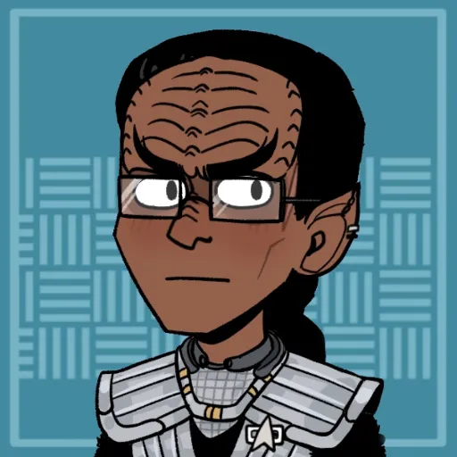 | On an exchange program between the Federation and the Klingon Empire. |
| Chief Engineer | Chief Petty Officer Bas Sa'mi | (he/him) - Andorian | Supporting Character |  | Salt of the Earth kind of Engineer, just looking to do his job. |
Command Division
| Role5 | Rank + " " + file.link + "" | "(" + pronouns + ") - " + Species | "" + Type + "" | Portrait | "> " + Summary |
|---|---|---|---|---|---|
| Commanding Officer | Captain Robin Zhao | (she/they) - Human | Supporting Character | Took up command of the Nightingale after gaining a reputation as an Emergency Response specialist. | |
| Executive Officer | Commander Vrenta Ewasi | (he/him) - Bajoran | Player Character | | No nonsense commander with strong ties to Starfleet Intelligence. |
| Quartermaster | Lt Commander Serres | (he/him) - Vulcan | Supporting Character | 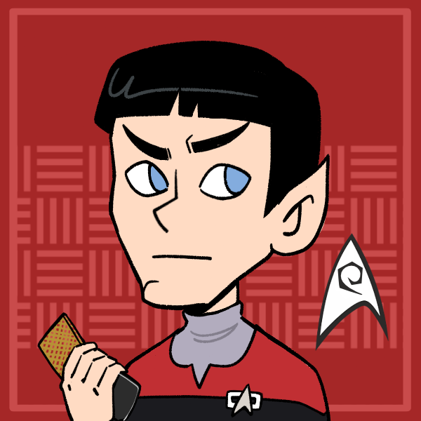 | Wields bureaucracy like a bully. |
| Flight Controller | Lieutenant JG Jackson Hayes | (he/him) - Human | Supporting Character | 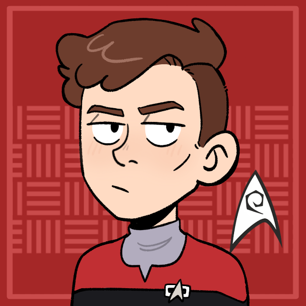 | Ambitious and gunning for a command of his own. |
| Administration | Chief Petty Officer Lara Tharn | (she/her) - Andorian | Supporting Character | 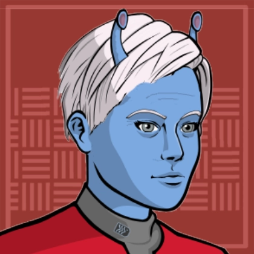 | Expert in procedure and bureaucracy, and knows how to use it to her advantage. |
Sciences Division
| Role4 | Rank + " " + file.link + "" | "(" + pronouns + ") - " + Species | "" + Type + "" | Portrait | "> " + Summary |
|---|---|---|---|---|---|
| Ship Doctor | Lieutenant Ujul Adsog | (they/them) - Klingon | Player Character | On an exchange program between the Federation and the Klingon Empire. | |
| Anthropologist | Lieutenant T'Lar | (she/her) - Vulcan | Supporting Character |  | Anthropology expert looking for the greatest mystery in her field: Who are the Tilikaal? |
| Subspace Specialist | Lieutenant JG Algan Kader | (he/him) - Betazed | Supporting Character | 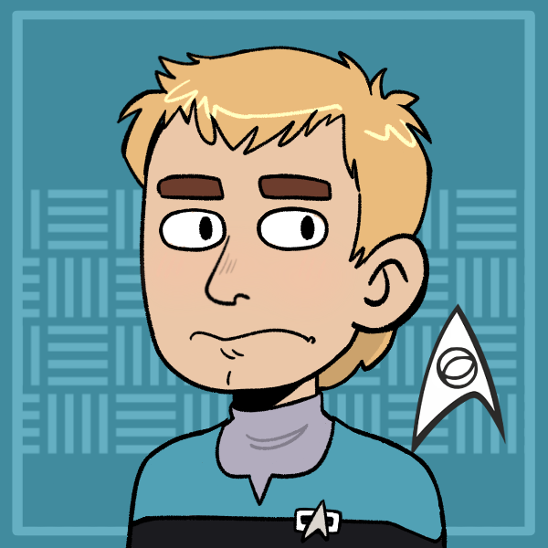 | New and shy, but a brilliant scientist. |
| Ship Doctor | - Emergency Medical Hologram | (-) - Hologram | Supporting Character | 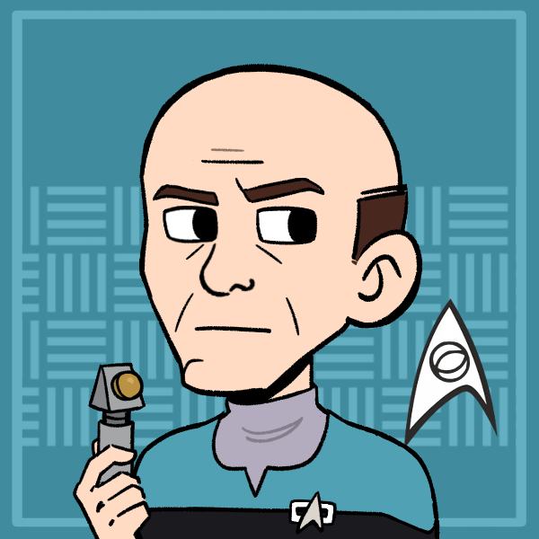 | Please state the nature of your medical emergency. |
Operations Division
| Role7 | Rank + " " + file.link + "" | "(" + pronouns + ") - " + Species | "" + Type + "" | Portrait | "> " + Summary |
|---|---|---|---|---|---|
| Intelligence Officer | Commander Holly Jones | (she/her) - Human | Player Character | 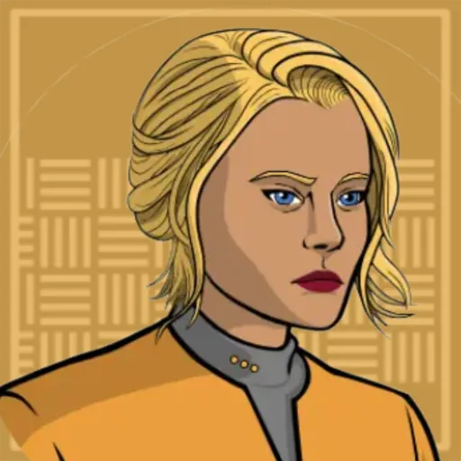 | Assigned to the Nightingale by Starfleet Intelligence to provide intel on the Expanse back to command. |
| Operations Manager | Lt Commander Kepler Faraday | (he/him) - Human | Supporting Character | 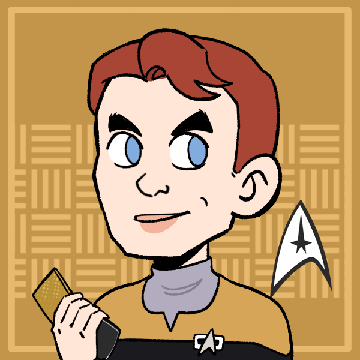 | Came up in the ranks with former Flight Controller, Lt Velara. |
| Flight Controller | Lieutenant Gaissen | (he/him) - Orion | Supporting Character | 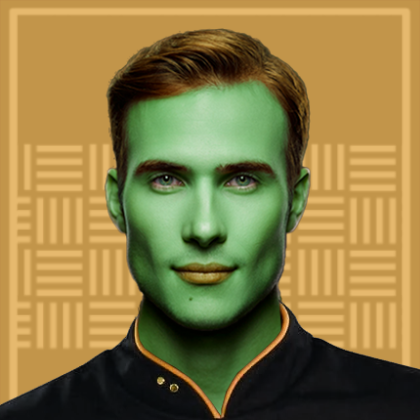 | Joined Starfleet to find freedom to live his own life. |
| Operations Assistant | Lieutenant JG Rala | (she/her) - Ferengi | Player Character | 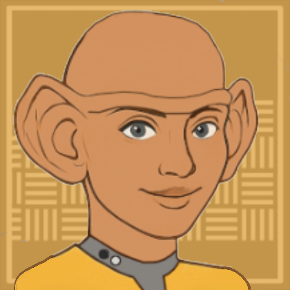 | A Ferengi with a rare trait found among women that makes her telepathic. |
| Chief Engineer | Chief Petty Officer Bas Sa'mi | (he/him) - Andorian | Supporting Character | | Salt of the Earth kind of Engineer, just looking to do his job. |
| Away Team Security Chief | Chief Petty Officer Artax | (he/him) - Edosian | Supporting Character | 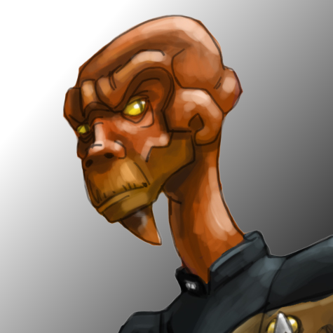 | Commands away team security, namely Siltec. |
| Security Specialist | Petty Officer First Class Siltec Nol | (he/him) - Cardassian | Player Character | 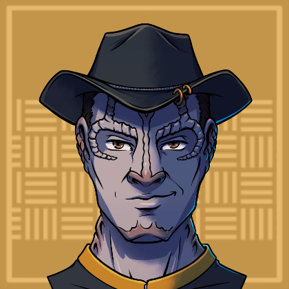 | Formerly recruited by Starfleet Intelligence. Now just looking to do some good in the world. |
Passengers
Ship Locations
Facilities
| File1 | "> " + Note |
|---|---|
| Meditation Chamber | Constructed in the lounge to give the Ithik of Chaktir a meditation and prayer space, in lieu of their black hole at Omega Draconis |
Shuttles
The Nightingale is equipped with dozens of shuttles. Some notable ones are listed below!
| File1 | "> " + Note |
|---|---|
| The Marie Curie | - |